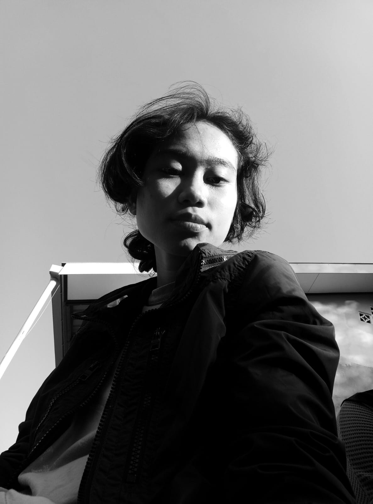

✦ Hi Everyone, saya
Nova
Rasyadina
Digital Artist · artist · Undergraduate
Mahasiswi Sistem Informasi - Fakultas Teknik - Universitas Mulawarman, Samarinda

Tentang Saya
Saya Nova Rasyadina yang biasa disapa Nova, mahasiswi semester 4 Sistem Informasi Fakultas Teknik Universitas Mulawarman. sangat condong di bidang seni, khususnya menggambar, melukisan, dan musik serta sangat sangat menyukai berkebun dan bermain game untuk mengisi waktu luang. Pernah aktif sebagai pengurus organisasi Inforsa (Information System Association) pada periode 2024-2025. saat ini sedang fokus mengembangkan skill di bidang digital art, UI/UX, serta web development, tentunya fokus terhadap akademik. memiliki skill dalam merangkul kelompok dan kerjaasama tim dengan baik. beranjak ke bidang freelance, saya telah menjual beberapa produk digital, diantara nya adalah undangan digital dan open commission digital art. saat ini saya juga mengebangkan skill dalam berbisnis digital lain seperti video editing dan digital marketing
Skills
Hobi
Pengalaman
{{ e.desc }}
Galeri Karya
Klik gambar untuk melihat lebih detail ✨
Sertifikat & Penghargaan
{{ c.title }}
{{ c.issuer }}
{{ c.year }}
{{ c.desc }}